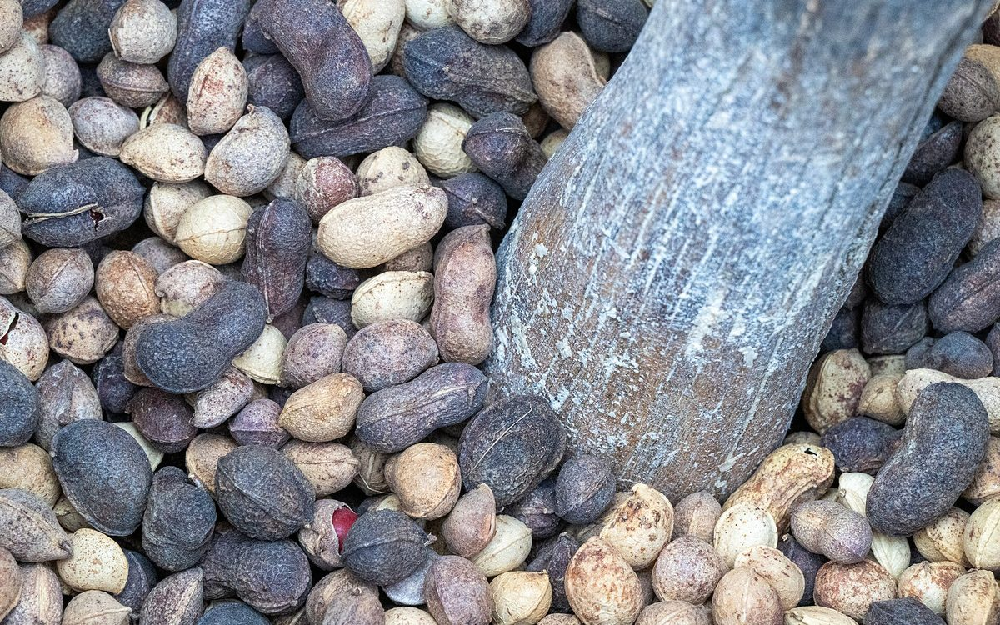
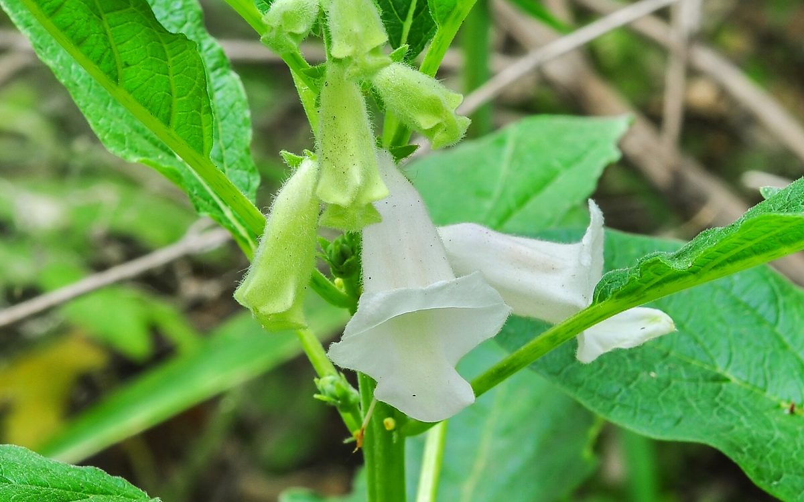
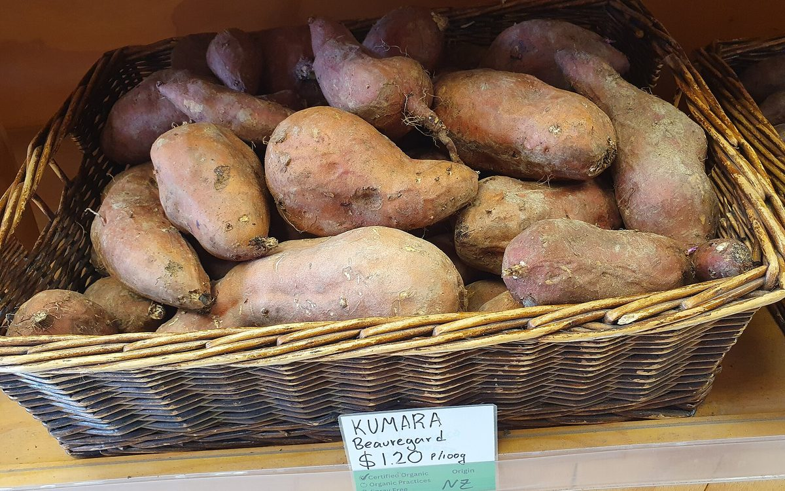
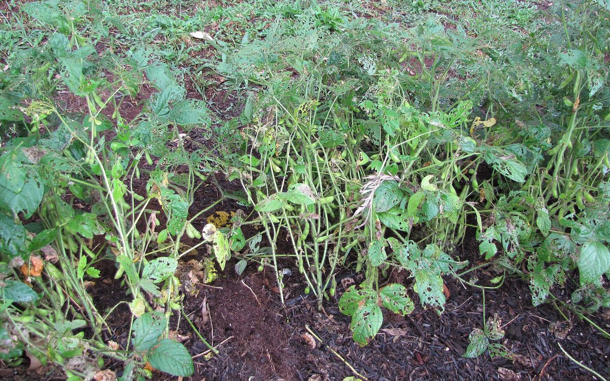
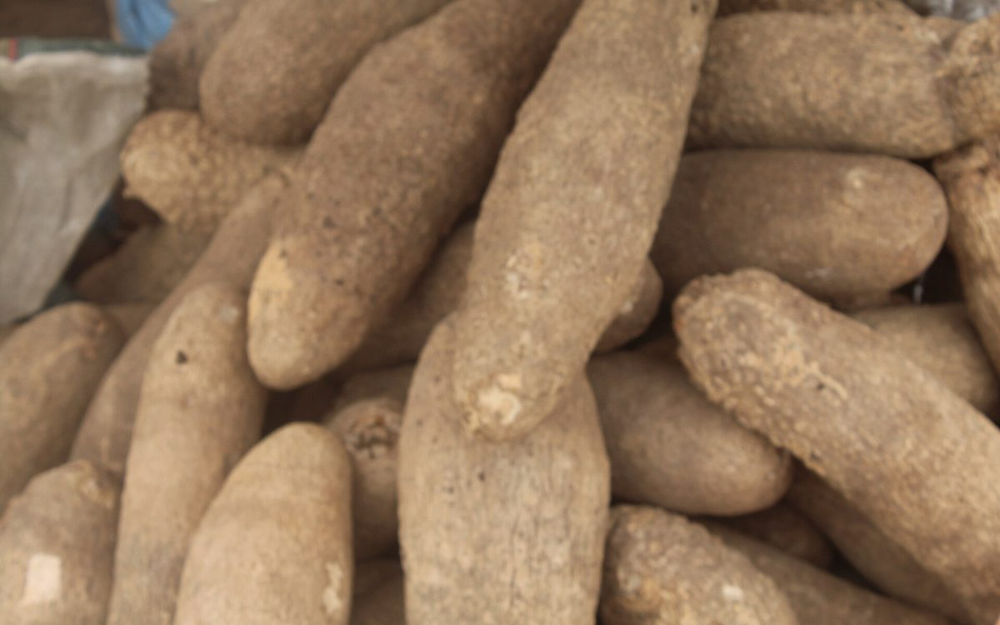
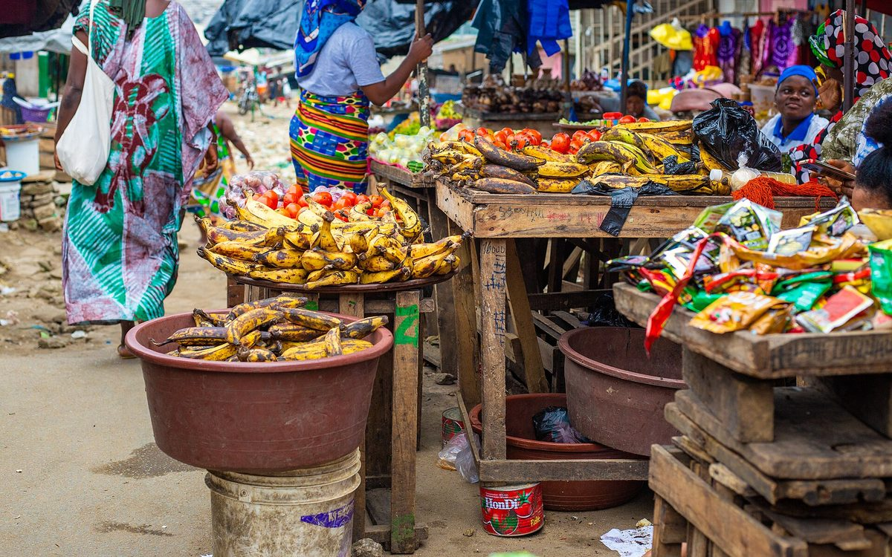
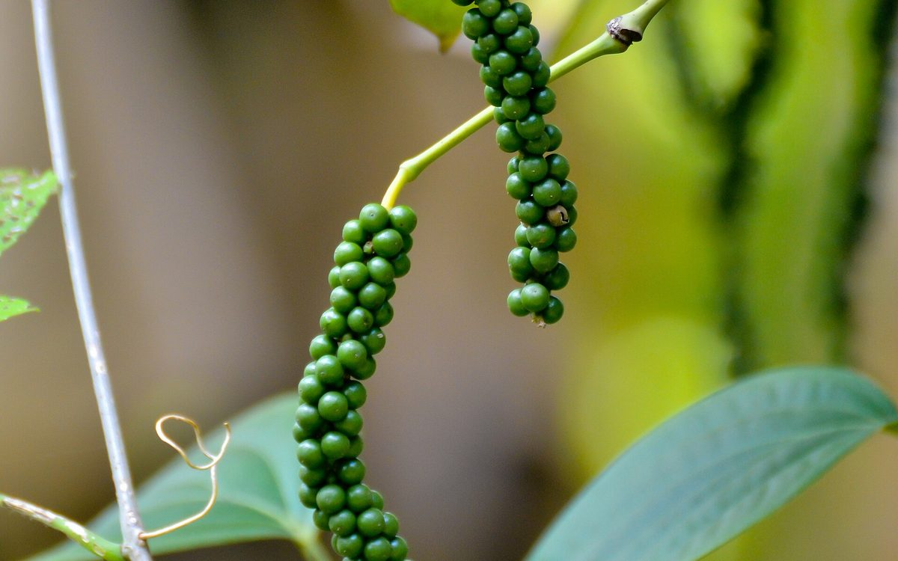
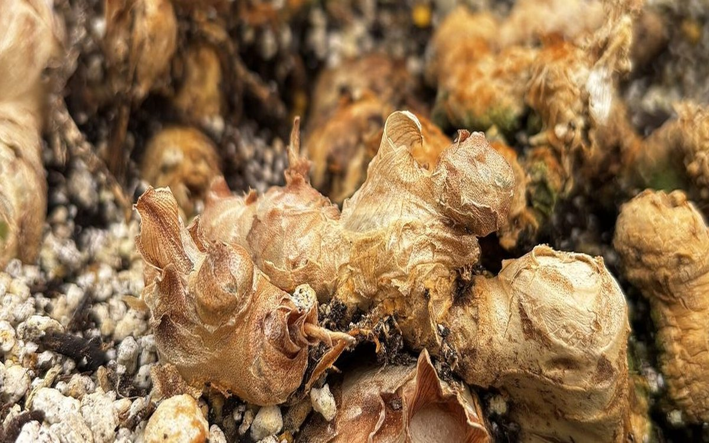
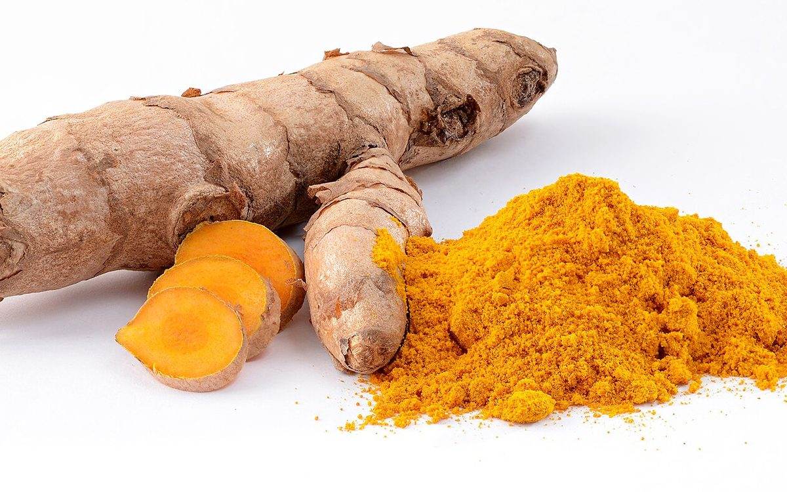
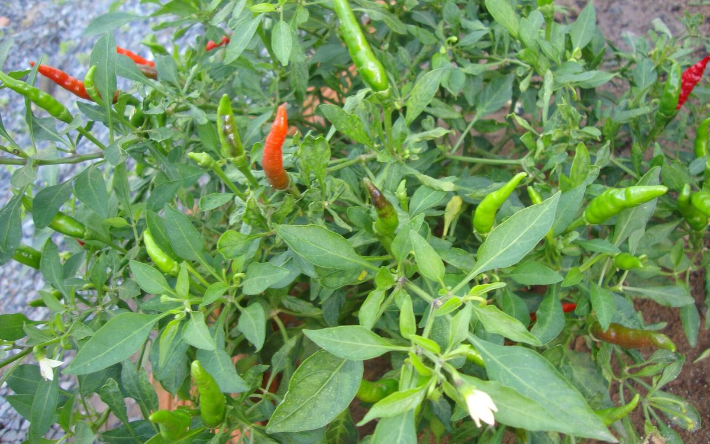

—
Gratuit chaque jour · sans carte bancaire
Le bon conseil agricole, au bon moment.
Une application, quatre onglets : conseil, cultures et épices, prix du kilo, actualités. Les agents experts répondent avec des données réelles, des sources et leurs limites.
météo…temps réel · Open-Meteo
prix…dernier relevé OCPV
Réponses vérifiéessources et limites citées
Conseil
Décrivez votre situation, on s'occupe du reste.
Choisissez votre localité, puis décrivez la parcelle ou l'élevage. La réponse est rendue par l'Agent Agronome Expert, avec ses sources, ses hypothèses et ses limites.
Cultures & épices
Huit cultures à fort potentiel, photos et repères réels.
Vivrières peu plantées et épices : peu d'intrants, meilleure valeur au kilo. Filtrez par famille, puis ouvrez une fiche pour le cycle, les atouts et le débouché.

Peu cultivéeVoandzou
Pois bambara, pois de terre
Légumineuse très rustique : elle fixe l'azote, supporte la sécheresse et se conserve longtemps sans traitement. Utile en rotation avant une céréale.
- Cycle
- 90 à 120 jours
- Atouts
- peu d'intrants, résiste au sec, enrichit le sol
- Débouché
- graines, farine, bouillie ; demande urbaine stable
Photo : Crop Trust · CC BY-SA 4.0 · Wikimedia
 Peu cultivée
Peu cultivée
Fonio
La céréale la plus fine
Pousse sur des sols pauvres et sableux, mûrit vite et demande peu d'eau — un recours quand la saison est courte.
- Cycle
- 60 à 90 jours
- Atouts
- rustique, très précoce, bon prix au kilo
- Débouché
- restauration, farines, marchés urbains et export
Photo : Crop Trust · CC BY-SA 4.0 · Wikimedia

Peu cultivéeSésame
Oléagineux d'export
Le point critique n'est pas la production mais la récolte : choisir des variétés à capsules qui ne s'ouvrent pas, récolter dès maturité, sécher sur bâche.
- Cycle
- 90 à 110 jours
- Atouts
- peu d'eau, demande à l'export, prix au kilo élevé
- Débouché
- huile, pâtisserie, export (qualité et propreté du lot)
Photo : Joydeep · CC BY-SA 3.0 · Wikimedia

Peu cultivéePatate douce à chair orange
Vitamine A, transformation
Rendement rapide sur sol léger, riche en bêta-carotène. Deux marchés : le frais et la transformation en farine ou purée.
- Cycle
- 90 à 120 jours
- Atouts
- couvre le sol, peu d'intrants, bonne valeur nutritionnelle
- Débouché
- frais, farine, programmes nutrition, écoles
Photo : Prosperosity · CC BY 4.0 · Wikimedia

Nouvelle ficheSoja
Oléagineux et protéine animale
Filière soutenue par le FIRCA depuis 2022 : la production nationale reste très inférieure à la demande des huileries et de l'aliment du bétail. Culture associée au maïs, elle enrichit aussi le sol en azote.
- Cycle
- 90 à 110 jours
- Atouts
- fixe l'azote, débouché industriel, prix de contrat possible
- Débouché
- huileries, provende, semence certifiée
Pourquoi maintenant : FIRCA (filière soja) ; USDA FAS - Oilseeds Annual 2025 — source
Photo : Forest and Kim Starr · CC BY 3.0 us · Wikimedia

Nouvelle ficheIgname
La culture vivrière à plus fort revenu
Le PNIA classe l'igname parmi les filières au plus fort potentiel d'augmentation du revenu agricole. Elle demande un sol meuble et profond, et une bonne maîtrise des boutures pour éviter les pertes au stockage.
- Cycle
- 7 à 9 mois
- Atouts
- forte valeur marchande, demande urbaine constante
- Débouché
- marchés urbains, cossettes, transformation en farine
Pourquoi maintenant : PNIA (Programme national d'investissement agricole) — source
Photo : Dorcas Atule · CC BY-SA 4.0 · Wikimedia

Nouvelle ficheBanane plantain
Demande urbaine en croissance
Le PNIA retient aussi la banane plantain parmi les filières à fort potentiel de revenu. Cycle court, régimes récoltés toute l'année : intéressante pour lisser la trésorerie entre deux campagnes de rente.
- Cycle
- 10 à 12 mois (rejets successifs)
- Atouts
- récolte étalée, bon rendement à l'hectare
- Débouché
- frais, alloco, chips, marchés urbains
Pourquoi maintenant : PNIA (Programme national d'investissement agricole) — source
Photo : BorisAhonon · CC BY-SA 4.0 · Wikimedia

ÉpicePoivre noir
Piper nigrum — liane à tuteurer
Liane tropicale conduite sur tuteur, à l'ombre légère. Baies vertes séchées = poivre noir ; baies dépulpées = poivre blanc. Production ivoirienne encore marginale : valider le débouché avant de planter.
- Cycle
- entrée en production 3 à 4 ans
- Atouts
- prix au kilo très élevé, valorise l'ombrage
- Débouché
- épiceries fines, restauration, export
Photo : K Hari Krishnan · CC BY-SA 3.0 · Wikimedia

ÉpiceGingembre
Zingiber officinale — rhizome
Rhizome cultivé sur sol meuble et humide, récolté à maturité des tiges. Forte demande locale pour les jus et boissons, et bonne valeur une fois séché et broyé.
- Cycle
- 8 à 10 mois
- Atouts
- demande locale forte, transformation simple
- Débouché
- marchés urbains, jus et boissons, cosmétique
Photo : Kayleemariev · CC0 · Wikimedia

ÉpiceCurcuma
Curcuma longa — rhizome orangé
Proche du gingembre, rhizome orangé séché puis broyé : épice, colorant, usage cosmétique. Transformation possible avec un simple séchoir et un moulin.
- Cycle
- 8 à 9 mois
- Atouts
- transformation simple, demande croissante
- Débouché
- poudre, épiceries, cosmétique
Photo : Simon A. Eugster · CC BY-SA 3.0 · Wikimedia

ÉpicePiment
Capsicum spp. — frais ou séché
Arbuste à récolte étalée : le séchage permet de lisser les ventes et d'éviter de brader au pic de production. Choisir une variété dont le piquant correspond au marché local.
- Cycle
- 4 à 6 mois, récolte étalée
- Atouts
- cycle court, demande urbaine constante
- Débouché
- frais, séché, transformation
Photo : Prenn · CC BY-SA 3.0 · Wikimedia
Prix des épices : aucun relevé officiel ivoirien n'est publié régulièrement. Nous ne donnons donc aucun prix au kilo pour ces cultures — demandez un devis à un acheteur ou renseignez-vous auprès de l'ANADER avant de planter.
Prix au kilogramme
Combien vaut votre produit cette semaine ?
Relevés de gros publiés par l'OCPV pour les produits vivriers. Un prix affiché n'est pas un prix garanti : il sert à négocier en connaissance de cause.
Prix de gros — produits vivriers
Semaine 09 · 2026
| Produit | Prix | Marché |
|---|---|---|
| Igname Kponan | 650 FCFA/kg | Abidjan |
| Graine de palme | 470 FCFA/kg | national |
Prix de gros indicatifs, à confirmer sur votre marché avant toute décision de vente.
Actualités & nouveautés
Ce qui bouge dans les filières.
Repères vérifiables, chacun rattaché à l'organisme qui fait référence. Les encarts qui clignotent signalent une nouveauté ou une culture à surveiller.
NouveauÉpices
Le curcuma et le gingembre entrent dans la bibliothèque
Deux rhizomes à forte demande locale, transformables en poudre avec un séchoir et un moulin. Fiches complètes : cycle, atouts, débouché.
NouveauPoivre
Le poivre noir, culture d'ombre à très forte valeur
Une liane qui valorise l'ombrage d'une plantation : 3 à 4 ans avant la pleine production, puis un prix au kilo sans commune mesure avec le vivrier.
Référence : ANADER
Campagne2026-2027
Cacao et café : le prix bord champ est fixé, pas négocié
Le prix bord champ est annoncé par le Conseil Café-Cacao avant l'ouverture. Faites peser au peson homologué et gardez le ticket de pesée.
Référence : Conseil Café-Cacao
FilièreRécolte 2026
Anacarde : le tri change le prix plus que la quantité
Séchage à l'ombre, tri des noix vides, sacs propres et cousus : trois gestes qui pèsent plus lourd qu'ajouter un sac.
Référence : Conseil Coton Anacarde
ClimatOctobre 2026
Fin de la petite saison des pluies : à intégrer avant de semer
Quand les pluies faiblissent, un semis de variété à cycle long prend un risque hydrique en décembre. Regardez la pluie réelle et la prévision 7 jours pour votre localité.
Référence : Open-Meteo (ERA5) · ANADER
Accès gratuit chaque jour
Gratuit tous les jours. Deux formules payantes, pas plus.
Chaque personne dispose de 2 conseils gratuits par jour, sans carte bancaire et sans inscription. Au-delà : un pack de crédits à l'usage, ou un suivi personnalisé.
Gratuit
Pour tout le monde, chaque jour.
0FCFA
2 conseils par jour · remis à zéro chaque matin
- 2 conseils IA par jour, sans carte bancaire
- Météo 12 mois et prévision 7 jours
- Calculs de marge, densité et semences
- Prix du marché, cultures et épices
Crédits
Pour payer à l'usage, sans abonnement.
599FCFA
les 10 conseils · valables 12 mois
- 10 conseils à utiliser quand vous voulez
- Ni abonnement, ni reconduction
- S'ajoutent aux 2 conseils gratuits du jour
- Paiement mobile money (Orange Money, MTN, Wave)
Suivi personnalisé
Pour être accompagné, pas seulement dépanné.
9 900FCFA
par mois, sans engagement
- Conseils illimités
- 2 parcelles ou ateliers suivis, avec historique
- Calendrier cultural personnalisé et rappels
- Revue mensuelle avec un conseiller
Orange Money · MTN MoMo · Wave — facture disponible. Tarifs de lancement indicatifs, hors taxes. Le quota gratuit est réinitialisé chaque jour.
Questions fréquentes
Ce qu'il faut savoir avant de commencer.
Le gratuit, c'est vraiment tous les jours ?
Oui : 2 conseils par jour, sans carte bancaire ni inscription, remis à zéro chaque matin. Au-delà, deux formules seulement : 10 crédits à 599 FCFA (valables 12 mois) ou le suivi personnalisé à 9 900 FCFA par mois.
Pourquoi seulement deux formules payantes ?
Parce qu'un producteur doit pouvoir décider vite : payer à l'usage quand il a un coup de feu, ou être suivi dans la durée. Les offres entreprises se traitent au cas par cas par e-mail, sans figurer dans la grille.
Les épices font-elles partie des cultures ?
Oui, elles sont dans le même onglet « Cultures & épices », avec un filtre dédié. Quatre vivrières peu plantées (voandzou, fonio, sésame, patate douce orange) et quatre épices (poivre, gingembre, curcuma, piment).
D'où viennent les infos affichées en continu ?
Deux sources distinctes, affichées ensemble dans le bandeau : la météo actuelle des villes de référence (Open-Meteo, rafraîchie côté navigateur) et les prix de gros OCPV du dernier relevé hebdomadaire. Nous indiquons toujours la date du relevé : la météo est en temps réel, les prix le sont à la semaine.
Que faites-vous de mes données ?
Votre question, votre localité et votre surface servent uniquement à produire la réponse. Rien n'est revendu, aucune publicité. Accès, rectification et suppression sur simple demande : politique de confidentialité, conforme à la loi ivoirienne n° 2013-450 du 19 juin 2013.
Deux conseils gratuits vous attendent aujourd'hui.
Sans inscription, sans carte bancaire. Pour un pack de crédits ou un suivi personnalisé, écrivez-nous : réponse avec proposition chiffrée.